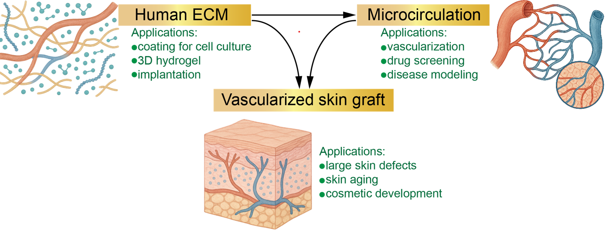

Microvascular Engineering & Regeneration Laboratory
Human-specific microvascular models
Our research is dedicated to engineering human-specific microvascular models to advance the understanding of microvessel regeneration, accelerate drug screening, and enable disease modeling.
By integrating stem cell technologies, biomaterials, and microfluidic platforms, we tackle these challenges across three core areas: developing human extracellular matrix (ECM) biomaterials, engineering functional microcirculation, and creating vascularized skin grafts.

Stem cells · Biomaterials · MicrofluidicsHuman ECM biomaterialsBuilding better environments for human cells.
Functional microcirculationEngineering networks of arterioles, capillaries, and venules.
Vascularized skin graftsBringing functional microvessels into engineered skin.
From the lab
See microvessels in motion
Watch capillary growth and astrocyte endfeet in our video highlights.